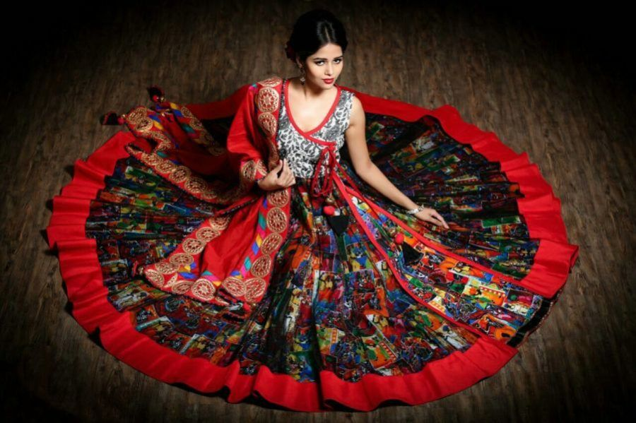
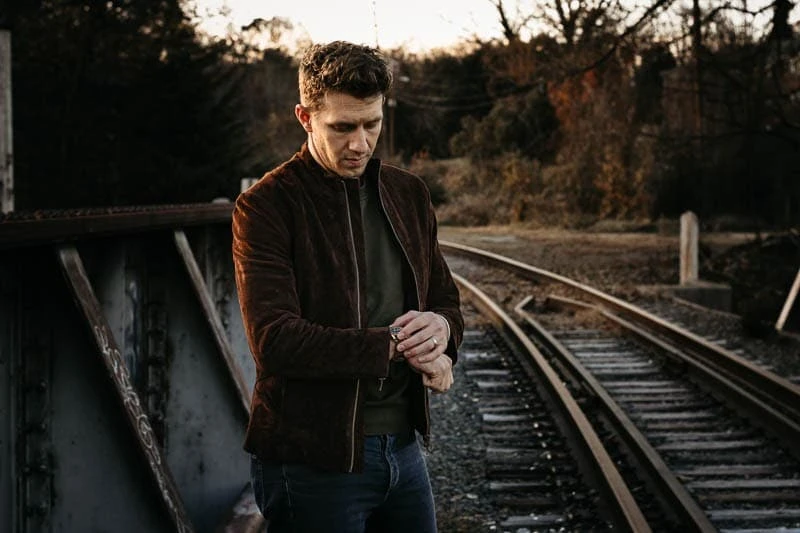

WELCOME TO FASHION DRESS EVENT👗
Step into the world of style and elegance at our exclusive Fashion Dress Event! This exciting showcase brings together creative designers, trendsetting models, and fashion enthusiasts under one roof. From traditional ethnic wear to modern couture, the event features a wide variety of garments that highlight innovation, culture, and personality.
Witness the runway come alive with dazzling outfits, graceful walks, and bold statements. Whether you’re a designer looking for inspiration, a model aiming to shine, or a guest who loves all things fashion, this event offers something for everyone. Professional photographers will be capturing every moment, turning the ramp into a gallery of style.
Join us for a celebration of colors, fabrics, and creativity. Be ready to explore the trends of tomorrow and experience the true spirit of fashion. Dress to impress — you might even be spotted as the next fashion icon!
Types Of Photography Allowed

Anarkali dresses are traditional Indian outfits with a fitted bodice and a long, flared skirt. They often feature full sleeves and elegant embroidery. These dresses provide full coverage while maintaining grace and charm, making them perfect for cultural events, weddings, or formal gatherings.

Casual dress for men includes comfortable yet stylish outfits like jeans, chinos, T-shirts, polo shirts, and casual shirts. Paired with sneakers or loafers, these outfits are perfect for outings, travel, or relaxed gatherings. Casual wear balances comfort and fashion, allowing men to express their personal style effortlessly.

This outfit features a stylish blend of boho and western fashion. The denim jacket paired with a wide-brimmed hat and layered necklaces creates a relaxed yet fashionable look. Light-colored pants and a flowy top complete the ensemble, perfect for outdoor shoots or casual countryside settings with a chic, rustic vibe.

This look blends rugged masculinity with modern casual fashion. The dark suede or leather jacket paired with a fitted crew-neck shirt and jeans creates a grounded, confident vibe. Ideal for outdoor settings or urban backdrops, it’s a timeless style that reflects simplicity, strength, and effortless cool in colder weather.
Contact
+91 7278432512 | covaievents@gmail.com
No 25, North Street, Kongu main road, Tirupur, 641 607